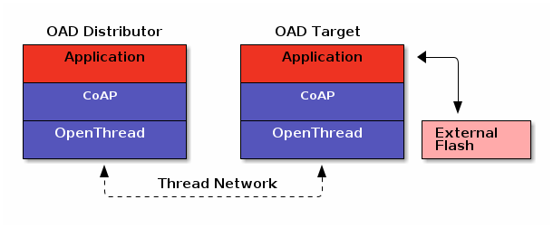

TI-OpenThread Native OAD¶
Warning
This is an experimental version of the TI-OpenThread OAD, and is currently experiencing ongoing development. Expect future versions to change.
A common OAD process can be seen as two very distinct phases: notification and transport of new images to a device, and updating into a newly downloaded image. First phase will inherently be different from protocol to protocol, as it will depend on protocol specific details. However, the second phase is protocol invariant and is based on a common architecture across protocols.
TI-OpenThread supports a native OAD process, which is a TI-OpenThread proprietary design and implementation. The Thread specification does not specify any standard process for OAD, which means any implementation of a native OAD process will be proprietary.
BIM is used as the common architecture for handling and updating new images on a device. Since BIM is a protocol invariant architecture, an OAD-enabled Thread Application can be transported over an another protocol that is OAD compatible, such as BLE. Refer to the Boot Image Manager (BIM) Chapter for more details.
For more information on the specifics of BLE OAD, consult the BLE User’s Guide.
System Overview¶
As detailed in Section OAD Topology Overview, an OAD exchange happens between two devices: an OAD Target and an OAD Distributor. The OAD Target is the device that receives the candidate images over the air, while the OAD Distributor notifies the OAD Target of new, available images and supplies the firmware update.
Note
TI-OpenThread only supports off-chip OAD, and therefore an external flash is required. During off-chip OAD, the candidate image is stored on the external flash and subsequently loaded into the internal flash.
For TI-OpenThread, the Target device is a Thread device which can both be an FTD or an MTD. This also includes SEDs. The Distributor must also be a Thread device connected to the same Thread Network as the Target device. That means the connection between the Distributor and the Target device cannot go off-mesh.
It is assumed that only a single Distributor exists on a Thread Network. However, multiple Distributors can co-exist in the same Thread Network. If a Target device were to receive multiple image notifications from different Distributors, it is up to the Target device to decide which image notification it accepts and rejects.
A candidate image is split into blocks, and each image block is transferred individually in sequence. The size of each block can be configured, with a default value of 128 bytes.
When a candidate image has been downloaded, the Target device does a system reset and BIM performs the actual procedure of updating into that image. Refer to Chapter Boot Image Manager (BIM) for more details on the update procedure.
OAD CoAP¶
The Constrained Application Protocol (CoAP) is used as the means of communication between the Distributor and the Target device. This includes registering new Target devices, notifying Taget devices of new candidate images, as well as the actual transport of candidate images.
Both the Distributor and the Target device acts as CoAP servers, with both devices exposing a set of CoAP resources denoted by URI. Each resource has a corresponding request and response message pair, for which a CoAP Client will send a request message to a given resource and the CoAP Server will respond with a response message.
Table 6. provides an overview of which CoAP resources are available for which OAD device. Table 7. provides an overview what kind of requests and responses are expected for each CoAP resource.
Ideally, CoAP Block-Wise Transfers would be used for transfer of firmware images, as it provides a minimal way of transferring large data in a block-wise fashion. However, OpenThread does not implement Block-Wise Transfers for its CoAP implementation, and subsequently is not used in the OAD protocol implementation for TI-OpenThread.
OAD Device |
CoAP URI |
Description |
|---|---|---|
Distributor |
|
Used by Target devices to register its ULA to the Distributor. This is only used if the Distributor does not have any other means to acquire the ULA of the Target device. |
|
Used by Target devices to request a specific image block for a specific image. |
|
Target |
|
Used for the Distributor to acquire information of which software version and BIM version the Target device is currently running. |
|
Used to notify Target devices that new images are available at the Distributor. |
CoAP URI |
Message |
Description |
|---|---|---|
|
Request |
Confirmable PUT request. Payload is the Target ML-EID + Target software version + Target platform type. |
Response |
Piggybacked response. No payload. |
|
|
Request |
Confirmable GET request. Payload is image ID + block number + total number of blocks. |
Response |
Piggybacked response. Payload is image ID + block number + block data. |
|
|
Request |
Confirmable GET request. |
Response |
Piggybacked response. Payload is the current software version and BIM version running on the Target device. |
|
|
Request |
Confirmable PUT request. Payload is information about the new available image. |
Response |
Piggybacked response. Payload is image accepted or rejected. |
OAD Protocol¶
The OAD protocol for TI-OpenThread is a proprietary protocol, and consists of the following steps:
Note
For all the sequence diagrams in this section, messages going between the CoAP Server and Client are messages which are transmitted on the Thread Network. Any required hops between additional Thread devices are omitted.
(Optional) Target device registers its Unique Local Address to the Distributor.
Target devices sends a Register Request message with the
oad/regURI to the multicast addressff03::2. The contents of the request is the ML-EID of the Target device, represented in bytes. On reception of the request, the Distributor stores the ULA of the Target device. This step is necessary if the Distributor does not have knowledge of all End Devices in the Thread Network.The Register Request message is sent periodically by the Target device until a Register Response message is received by a Distributor. The Target device keeps sending Register Request messages as keep-alive messages to the Distributor after it has been registered, however, at a much slower period. The period is user configurable.
![@startuml
hide footbox
participant Target as target
participant "CoAP Client" as target_coap
participant "CoAP Server" as distr_coap
participant Distributor as distr
activate distr
activate target
target -> target_coap : Register request
activate target_coap
group Multicast ff03::2
target_coap -> distr_coap : CON [0xe708] PUT /oad/reg\nPayload {Target ULA + SW version + Platform type}
activate distr_coap
end
distr_coap -> distr : CoAP Server callback
distr -> distr_coap : Register response
alt Valid request
distr_coap -> target_coap : ACK [0xe708] 2.05 Content
else Invalid request
distr_coap -> target_coap : ACK [0xe708] 4.08 Request Entity Incomplete
deactivate distr_coap
end
target_coap -> target : CoAP Client callback
deactivate target_coap
@enduml](../_images/plantuml-70e416176e7b40ba3120775685a824d3d6d375eb.png)
(Optional) Distributor acquires Firmware Version information from Target device.
Distributor sends a Firmware Version Request message with the
oad/fwvURI to the unicast address of a Target device. The response from the Target device contains information about its current software version and BIM version.The software version is a four character string which keeps track of the application and stack revision contained in the image. Refer to Software version for more information. The BIM version is a byte, which is used to determine if images are compatible with BIM that is running on the device. Refer to BIM Version for more information.
The response is on the format
"sv:XXXX bv:YY", whereXXXXis the software version, andYYis the BIM version byte in string representation. Note the space between the software version and the BIM version.
![@startuml
hide footbox
participant Distributor as distr
participant "CoAP Client" as distr_coap
participant "CoAP Server" as target_coap
participant Target as target
activate distr
activate target
distr -> distr_coap : Firmware Version request
activate distr_coap
distr_coap -> target_coap : CON [0x9638] GET /oad/fwv
activate target_coap
target_coap -> target : CoAP Server callback
target -> target_coap : Firmware Version response
target_coap -> distr_coap : ACK [0x9638] 2.05 Content\nPayload "sv:0001 bv:03"
deactivate target_coap
distr_coap -> distr : CoAP Client callback
deactivate distr_coap
@enduml](../_images/plantuml-fd2088766c93b3dca573f693f7751c50927e379c.png)
Figure 66. Distributor retrieves firmware information from Target¶
Distributor notifies Target devices that a new firmware image is available.
When the Distributor has a new candidate image, it notifies Target devices depending on their Firmware Version information. Distributor sends Image Notification requests with the
oad/ntfURI to the unicast addresses of Target devices. Distributor decides when to notify Target devices and in which order.The request contains information about the new candidate image, such as software and BIM compability, and firmware image type and size. Target device responds with either an image accept or reject based on the provided information.
![@startuml
hide footbox
participant Distributor as distr
participant "CoAP Client" as distr_coap
participant "CoAP Server" as target_coap
participant Target as target
activate distr
activate target
distr -> distr_coap : Image Notify request
activate distr_coap
distr_coap -> target_coap : CON [0xca32] PUT /oad/ntf\nPayload {Image information}
activate target_coap
target_coap -> target : CoAP Server callback
target -> target_coap : Image Notify response
alt Image accepted
target_coap -> distr_coap : ACK [0xca32] 2.05 Content\nPayload "Accept"
else Image rejected
target_coap -> distr_coap : ACK [0xca32] 2.05 Content\nPayload "Reject"
deactivate target_coap
end
distr_coap -> distr : CoAP Client callback
deactivate distr_coap
@enduml](../_images/plantuml-ddb61363652c551dc2a514f98523b92311aefc25.png)
Figure 67. Distributor notifies Target of new candidate image¶
Target device starts the download process.
Only if the candidate image is accepted will the Target device initate the download process. Target device sends Image Block requests with the
oad/imgURI to the unicast address of the Distributor. The request describes which a block from the image, denoted by a block number.Blocks are requested in a sequential order, and the Target device keeps track of what the current block number is. Only when the current block number has been successfully downloaded will the Target device request the next block. Block are stored in external flash when downloaded.
What is important to note is that the Target device decides when blocks are requested and at which rate. This means the download process is completely driven by the Target device. The Distributor does not put any constraints on Target devices how fast the download must occur. As long as the candidate image is available, the download process can take as long time as the Target device wants.
![@startuml
hide footbox
participant Target as target
participant "CoAP Client" as target_coap
participant "CoAP Server" as distr_coap
participant Distributor as distr
activate target
activate distr
loop For all Image Blocks
target -> target_coap : Image Block request
activate target_coap
target_coap -> distr_coap : CON [0x8fdb] GET /oad/img\nPayload {Block number}
activate distr_coap
distr_coap -> distr : CoAP Server callback
distr -> distr_coap : Image Block response
alt Valid block request
distr_coap -> target_coap : ACK [0x8fdb] 2.05 Content\nPayload {Block data}
else Target not registered
distr_coap -> target_coap : ACK [0x8fdb] 4.04 Not Found
else Block request sent before image notification
distr_coap -> target_coap : ACK [0x8fdb] 4.01 Unauthorized
else Wrong format of block request
distr_coap -> target_coap : ACK [0x8fdb] 4.08 Request Entity Incomplete
else Other errors
distr_coap -> target_coap : ACK [0x8fdb] 4.06 Not Acceptable
deactivate distr_coap
end
target_coap -> target : CoAP Client callback
deactivate target_coap
end
@enduml](../_images/plantuml-ddc1d0520ad30b447cced5fdbdaf11439eb8fff1.png)
Figure 68. Target requests a single image block from Distributor¶
On download complete, Target device updates the firmware image.
When all blocks have been successfully downloaded, the candidate image is now stored in external flash on the Target device. Target device invokes a system reset, and the BIM procedure as described in BIM for Off-Chip OAD is performed.
In short, the integrity of the image is verified by calculating the CRC of the image. If secure OAD is enabled, the signature of the image is also authenticated. If either the integrity check or the authentication fails, the image is rejected. If not, the image is accepted and marked as the new image to be booted in.
Target device reset itself and BIM copies the new image to the internal flash. If an error occurs during the copy procedure, BIM switches back to a factory image. Refer to Section BIM for Off-Chip OAD for more details about the BIM procedure.
OAD Pause and Resume¶
Since the download process of the image is driven by the Target device, it has the ability to explicitly pause and resume download. The key difference between pausing a download and setting the rate between each block request, is that pausing is indefinite until an explicit resume is invoked. Setting the request rate only changes the waiting period until the next block request.
The Target device can also be paused if the device loses network connection or loses power. When the device restores the network connection or regains power, it has the ability to resume the download process and pick up from where it left off.
From the Distributor’s point of view, there is no difference if the Target device is paused or not. The Distributor only responds whenever a block requests is received, which can be sent at any given time.
OAD Abort¶
Whenever the Target device sends a block request, there always a risk that either the block request never reaches the Distributor, or the response never reaches back to the Target device. Thread takes care of retransmissions at the MAC layer, while CoAP takes care of retransmissions at the transport layer.
If retransmissions are not sufficent, or if the Distributor is simply unavailable, then the Target device will eventually reach a maximum number of retransmissions and the download is aborted. However, the Target device can later try and resume the download if appropriate.
The number of retransmissions CoAP sends for confirmable messages are configurable at the application level, with a default count of four.
Figure 69. shows a sequence diagram of a block request which initially succeeds, but the Distributer suddenly becomes unavailable. The subsequent block request now does not result in any response and the target Device starts sending retransmissions of the block request. After the number of retransmits hits maximum, the Target device aborts the download.
![@startuml
hide footbox
participant Target as target
participant "CoAP Client" as target_coap
participant "CoAP Server" as distr_coap
participant Distributor as distr
activate target
activate distr
target -> target_coap : Image Block request
activate target_coap
target_coap -> distr_coap : CON [0x07b4] GET /oad/img\nPayload {Block number}
activate distr_coap
distr_coap -> distr : CoAP Server callback
distr -> distr_coap : Image Block response
distr_coap -> target_coap : ACK [0x07b4] 2.05 Content\nPayload {Block data}
deactivate distr_coap
target_coap -> target : CoAP Client callback
deactivate target_coap
...
distr <--] : Becomes unavailable
deactivate distr
target -> target_coap : Image Block request
activate target_coap
target_coap ->x distr_coap : CON [0x6878] GET /oad/img\nPayload {Block number}
|||
target_coap ->x distr_coap : CON [0x6878] GET /oad/img\nPayload {Block number}
...N number of retries ...
target_coap ->x distr_coap : CON [0x6878] GET /oad/img\nPayload {Block number}
note right of target_coap: Maximum number retries met
target_coap -> target : OAD Abort
deactivate target_coap
@enduml](../_images/plantuml-151776dc0099b809bb8404b43921f793ae6f2d97.png)
Figure 69. OAD image download abort¶
OAD Application Usage¶
An application developer wishing to use the TI-OpenThread OAD solution will not need to worry about implementing the OAD state machine, but can instead just include the OAD module. The OAD module implements the OAD state machine, which is defined by the OAD protocol.
The OAD state machine differs between the Target device and Distributor, and therefore the OAD module will be different for both OAD devices. In addition, the architectural requirements for the Target device and the Distributor are different, which will be highlighted in the subsequent sections.
The size of the image block sent from the Distributor to the Target device can
be configured, with a default size of 128 bytes. The define OAD_BLOCK_SIZE
configures the block size, and is set independently in both the Target device
application and the Distributor application.
Note
The OAD_BLOCK_SIZE define must be set to the same value for both the
Target device and Distributor application, since block size negotiation is
not supported.
OAD Target Device Application¶
A Target device will in most use cases be a single-chip, Thread-only device. In other words, the application layer and OpenThread runs on the same processor.
Note
The OAD module for Target devices only supports single-chip, Thread-only platforms.
The OAD module for the Target device is provided as part of the TI-OpenThread environment, and implements the OAD protocol and the off-chip storage handling. The module is based on the OpenThread CoAP implementation. Figure 70. describes the OAD state machine for the Target device.
{kind=link}
Target Application Interface¶
The OAD module for the Target device exposes the following API.
/**
* @brief Initializes the OAD module on network connection event.
* @return None
*/
void OAD_open(void);
/**
* @brief Close the OAD module.
* @return None
*/
void OAD_close(void);
/**
* @brief Abort firmware download on transmission error.
* @return None
*/
void OAD_abort(void);
/**
* @brief Download resume on service recovery or reboot.
* @return None
*/
void OAD_resume(void);
/**
* @brief Pause OAD module, if valid download in progress.
* @return None
*/
void OAD_pause(void);
/**
* @brief A function to process the OAD events.
* @return None
*/
void OAD_processQueue(void);
/**
* @brief A function to process the OAD periodic ctrl events.
* @return None
*/
void OAD_processCtrlEvents(appEvent_e event)
OAD Distributor Application¶
Since the Distributor has to in some way acquire new candidate images (either via other IP network, or direct links with an operator), the most natural architecture would be an NCP. In addition, the Distributor will likely need to store multiple candidate images, which puts higher memory requirements on the device. The application layer would run on a host MCU, while Thread features run on the SoC.
Since the application layer of the Distributor would in most cases run on some host, the CoAP implementation no longer depends on the OpenThread implementation. Rather, any CoAP implementation can be used that is compatible with the host MCU environment.
Figure 71. describes the state machine for the OAD Distributor.
{kind=link}
CoAP Message Layout¶
The following tables describes the content layout of the various CoAP messages.
Field |
Size (in bytes) |
Description |
|---|---|---|
Unique Local Address |
16 |
An IPv6 Unique Local Address of the Target device |
Field |
Size (in bytes) |
Description |
|---|---|---|
Software Version |
7 |
String representation on the format |
Divider |
1 |
Dummy character to separate the Software and BIM Version, defaults to space character |
BIM Version |
5 |
String representation on the format |
Reserved |
19 |
Default is set to zero |
Field |
Size (in bytes) |
Description |
|---|---|---|
Image ID |
1 |
Identifier for which image the notification corresponds to |
OAD Image ID |
8 |
Unique number to identify the start of an OAD image |
BIM Version |
1 |
Version required to support image format |
Meta Version |
1 |
Version of image header contained in image |
Image Copy Status |
1 |
Status of whether the Image has been copied or not |
CRC Status |
1 |
Status of the CRC check |
Image Type |
1 |
Type of image, e.g. Application or Factory image |
Image Number |
1 |
Distinguish between multiple images within a technology |
Image Length |
4 |
The total length of the image including header |
Software Version |
4 |
Software version of the image |
Field |
Size (in bytes) |
Description |
|---|---|---|
Image ID |
1 |
Identifier for which image the notification corresponds to |
Status |
1 |
Status indicating if the notification request was accepted or rejected |
Field |
Size (in bytes) |
Description |
|---|---|---|
Image ID |
1 |
Identifier for which image the block corresponds to |
Block Number |
2 |
Which block to download |
Total Blocks |
2 |
Total number of blocks the image consists of |
Field |
Size (in bytes) |
Description |
|---|---|---|
Image ID |
1 |
Identifier for which image the block corresponds to |
Block Number |
2 |
Which block to download |
Data |
|
Block data, where its size is configurable |
TI-OpenThread OAD Examples¶
The SimpleLink CC13xx/CC26xx SDK contains example applications which both are OAD-enabled and can perform OAD operations. In the context of OAD, an example being OAD-enabled means the image can be transferred over OAD, while performing OAD operations means the example can participate in the OAD transfer.
Note
Given an OAD image, the intended OAD target’s device type (e.g. CC1352R1) is
determined by the OAD Image ID. By default, this corresponds to the
value set for OAD_IMG_ID_VAL. So for instance, a CC1352R1 device
implementing an OAD target would only accept an OAD image which has an
image ID of ‘C’, ‘C’, ‘1’, ‘3’, ‘x’, ‘2’, ‘R’, ‘1’. This check is performed
with function oadCheckImageID. Make sure this value matches between
the intended OAD target and the respective OAD image, especially if
sysconfig board migration is used
(Hardware View).
Door Lock OAD¶
The Door Lock OAD example is a modified version of the Door Lock example, which implements an OAD Target device ontop of the existing example. The example gives an example usage of the OAD module, and how one would implement an OAD Target device.
The example comes in two flavors: Secure OAD and Unsecure OAD. The Door Lock OAD example is configured with unsecure OAD, while Door Lock Secure OAD is configured with secure OAD. For more information what OAD security entails, please refer to Section OAD Security.
The Door Lock OAD example supports reverting back to a factory image.
OAD CLI¶
The OAD CLI example is equivalent to the CLI example, with the addition of being OAD-enabled. That means the generated image file can be used as a candidate image for an OAD exchange.
The example does not display any usage of the OAD module. It is simply an OAD-enabled Thread project which an OAD-enabled device can download. Refer to Section Create a TI-OpenThread OAD Image for how to make existing Thread projects OAD-enabled.
The OAD CLI example supports reverting back to a factory image.
OAD Server¶
The OAD Server example implements the OAD Distributor protocol on a host processor connected to a NCP. The example is meant to run in a Linux environment, and communicates with OAD Targets in a Thread network via the border router.
The example implements the OAD Distributor protocol on top of libcoap, which is an open-source implementation of CoAP. For more information about libcoap, see libcoap Homepage.